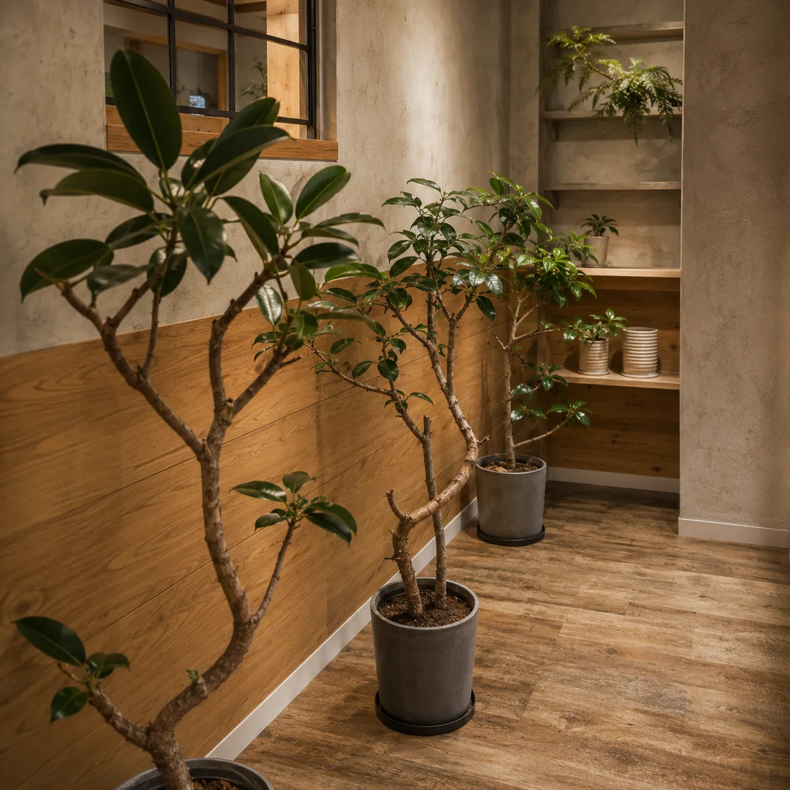

モンステラの育て方｜熊本の夏と冬に合わせた水やり・置き場所

モンステラを迎えたけれど、水やりの頻度や置き場所に迷っていませんか。この記事では、モンステラの育て方の基本と、葉に切れ込みが入らない・黄色くなるときの見分け方を、熊本の夏の日差しと冬の冷え込みもふまえてまとめました。
モンステラはどんな植物？育てやすいと言われる理由
モンステラは、熱帯アメリカの森に自生するサトイモ科のつる性植物です。大きな木の幹に気根をからませながら、上へ上へと伸びていきます。葉に入る切れ込みや穴が特徴で、一鉢あるだけで部屋の雰囲気がぐっと南国らしくなります。
育てやすいと言われるのは、多少の水やり忘れや明るさの不足にも、ある程度耐えてくれる丈夫さがあるからです。生育期には新しい葉を次々に広げるので、成長を実感しやすいのも人気の理由です。
一方で、暖かい時期の伸びはかなり旺盛です。数年で横にも縦にも広がるので、置く場所には少し余裕を見ておくと、あとで困りません。
置き場所はどこがいい？熊本の夏と冬で変えること
基本の置き場所は、レースカーテン越しにやわらかい光が入る窓辺です。森の木の下で育つ植物なので、直射日光が長く当たると葉が焼けて、茶色や白っぽく抜けることがあります。反対に暗すぎる場所では、茎がひょろりと伸びて、葉に切れ込みが入りにくくなります。
- おすすめ：レースカーテン越しの明るい窓辺
- 次の候補：窓から1〜2mほどの、日中は照明なしで本が読める明るさの場所
- 避けたい場所：エアコンや暖房の風が直接当たる場所、真夏の西日が差し込む窓辺
熊本の夏は日差しが強く、窓辺の温度は思っている以上に上がります。とくに西向きの窓は、午後の数時間で葉焼けを起こしやすいので、真夏だけ窓から少し離すか、カーテンを一枚はさむと安心です。
冬は逆に、窓辺に冷えが集まりやすくなります。熊本市内でも、晴れた日の明け方はぐっと冷え込むことがあり、窓ガラスのそばは部屋の中央より冷えやすい場所です。冬の夜の具体的な過ごし方は、後半の「冬越し」の見出しでまとめています。

水やりの頻度は？季節ごとの目安
水やりは「何日に1回」と決めるより、土の乾き具合を見て決めるのが失敗しないコツです。同じモンステラでも、鉢の大きさや置き場所、季節で乾くまでの日数がまったく変わります。
- 指を土に2〜3センチほど差し込み、表面だけでなくその深さまで乾いているか確かめる
- 乾いていたら、鉢底から水が流れ出るまでたっぷり与える
- 受け皿にたまった水は、そのままにせず捨てる
季節ごとの目安は次のとおりです。
- 春〜秋（よく育つ時期）：指で確かめて2〜3センチの深さまで乾いていたらたっぷり。真夏は乾きが早いので、こまめに土を確かめる
- 冬（成長がゆっくりになる時期）：2〜3センチの深さまで乾いてから、さらに数日おいて与えるくらいが目安。迷ったら、水をあげた直後より鉢がはっきり軽くなっているかも合わせて見る
冬に減らすのは、1回の量ではなく回数です。少しずつ毎日あげると、鉢の中がいつも湿ったままになり、根が傷む原因になります。冬の水やりの考え方は、冬の観葉植物の育て方でもくわしくまとめています。
空気が乾く季節は、葉に霧吹きで水をかけてあげると葉の状態を保ちやすくなります。あわせて、葉にたまったほこりを、水でぬらして固く絞った布でふき取ると、光をしっかり受けられるようになります。
葉に切れ込みが入らない・黄色くなるのはなぜ？
モンステラでよくある疑問が「切れ込みが入らない」というものです。まず知っておきたいのは、若い株の葉はもともと切れ込みが少なく、株が育つにつれて入りやすくなるということです。小さな株で切れ込みがなくても、それ自体は異常ではありません。
ある程度育った株なのに切れ込みが入らないときは、光が足りていないことが多いと考えられます。少し明るい場所へ移して、新しく出てくる葉の様子を見てください。すでに開いた葉の形はあとから変わらないので、変化が分かるのは次の葉からです。
葉の色の変化は、原因を見分ける手がかりになります。
- 下のほうの古い葉が1枚ずつ黄色くなる：自然な葉の入れ替わりのことも多い
- 新しい葉も含めて黄色くなり、土がいつも湿っている：水のあげすぎや根の傷みを疑う
- 葉の一部が茶色く焼けたようになる：直射日光や、冷たい窓ガラスに触れていた可能性
- 葉先だけが茶色く枯れる：空気の乾燥や、水切れが続いた可能性
黄色い葉が増えてきたときは、次の順に確かめると原因をしぼりやすくなります。
- 土を触り、2〜3センチの深さまで湿ったままになっていないか
- 受け皿に水がたまっていないか、鉢底から嫌なにおいがしないか
- 置き場所が急に暗くなったり、冷たい窓辺や暖房の風の当たる場所になっていないか
気根や伸びすぎた茎はどうする？支柱・剪定・植え替え
モンステラの茎の途中から、茶色いひものような根が伸びてくることがあります。これは気根と呼ばれ、自生地では木にからみついて体を支える役割があります。見た目が気になる場合は切っても株が弱ることはあまりありませんが、土へ誘導すると根として張り、株を支える助けになります。
大きくなって茎が倒れてきたら、支柱を立てて麻ひもなどでゆるく留めます。水苔やヤシの繊維を巻いた支柱を使うと、気根がからみやすく、まっすぐ上へ育てやすくなります。
広がりすぎたときは、暖かい時期に剪定して形を整えます。切るときは、茎の節（葉や気根の付け根のふくらみ）を目印にします。親株側は節の少し上で切り、切り取った側には節が1つ以上と葉が1〜2枚残るようにします。切り取った茎は水に挿しておくと、節から根が出てくることがあり、株を増やす楽しみもあります。
植え替えは、鉢底から根がはみ出してきたり、水がしみ込みにくくなったりしたときが合図です。目安は1〜2年に1回、時期は気温が上がって成長が始まる春から初夏が向いています。今より一回り大きい鉢に、水はけのよい観葉植物用の土で植え替えます。鉢の見た目を変えたいだけなら、植え替えずに鉢カバーを合わせる方法もあります。選び方は鉢カバーの選び方で紹介しています。

冬越しで気をつけることは？
モンステラは寒さがあまり得意ではありません。元気に育つのはおおむね15℃以上の環境で、10℃を下回るような場所が続くと傷みやすくなると考えておくと安心です（数字はあくまで目安です）。冬は成長がゆっくりになるので、「育てる」より「傷ませない」を意識します。
- 夜は窓から離し、部屋の内側に置く（冷える窓辺なら、夜のあいだだけ数十センチ内側へ寄せるだけでも違います）
- 玄関や廊下など、夜に冷え込む場所に置きっぱなしにしない
- 水やりの回数を減らし、生育が鈍っているあいだは肥料を控える
熊本は日中が暖かくても、明け方に一気に冷えることがあります。昼間の暖かさで判断せず、夜から朝にかけて置き場所がどれくらい冷えるかで考えると安心です。気になるときは、置き場所に温度計をひとつ置いて、明け方の温度を確かめてみてください。
まとめ
モンステラは、明るい日陰に置き、土が乾いたらたっぷり水をあげ、冬の冷えから守るという基本を押さえれば、長く付き合える丈夫な植物です。
- 置き場所：レースカーテン越しの明るい窓辺。真夏の西日と冬の窓辺の冷えに注意
- 水やり：土が乾いたらたっぷり。冬は回数を減らす
- 切れ込み：株が育つにつれて入りやすくなる。入らないときは明るさを見直す
- 手入れ：気根は誘導か切るか、伸びすぎたら春〜初夏に剪定・植え替え
HYGGE PLANTS & ZAKKAでは、モンステラを扱っていることがあります。株の姿や葉の切れ込みの入り方は一鉢ずつ違うので、実物を見て選ぶのがおすすめです。取り扱い状況は時期によって変わるため、来店前に気になる方はLINEかお電話でお問い合わせください。「この場所に置けるかな」「あまり手をかけられない」といったご相談だけでも大丈夫です。
よくある質問
- モンステラは日の当たらない部屋でも育てられますか？
- すぐに枯れることは少ないですが、暗い場所に長く置くと茎が間延びし、葉に切れ込みも入りにくくなります。窓のない部屋なら、植物用のライトで毎日一定の時間光を当てるなど、続けて光を確保する工夫が必要です。それが難しい場合は、明るい部屋に置き場所を移すことを考えてみてください。
- 肥料はいつ、どのくらい与えればいいですか？
- 成長する春から秋に、観葉植物用の緩効性肥料を置くか、液体肥料を薄めて与えるのが一般的です。量や頻度は商品の表示に従ってください。冬や、植え替えた直後・弱っているときは与えないようにします。
- モンステラはペットのいる家でも置けますか？
- モンステラを含むサトイモ科の植物は、葉や茎の汁に刺激のある成分を含むと言われています。犬や猫、小さなお子さんがかじらないよう、手の届かない場所に置くと安心です。
- 葉から水滴が落ちているのは病気ですか？
- 根から吸い上げた水分を葉から出す、溢液（いつえき）と呼ばれる現象のことが多く、それ自体は病気ではありません。ただ、頻繁に見られる場合は土が湿りすぎていることもあるので、水やりの間隔を見直してみてください。
HYGGE（ヒュッゲ）のお店
観葉植物と北欧雑貨のお店です。実物を見て選びたい方は、お気軽にお立ち寄りください。
熊本市南区幸田1丁目7-15／11:00〜17:00（水・土定休）／駐車スペースあり